5. Introduction to the PrimeFaces Component Library
5.1. The Role of PrimeFaces in a JSF Application
Let’s return to the architecture of a JSF application as we studied it at the beginning of this document:
 |
JSF pages were built using three tag libraries:
- line 2: the <h:x> tags from the [http://java.sun.com/jsf/html] namespace, which correspond to HTML tags,
- line 3: the <f:y> tags in the [http://java.sun.com/jsf/core] namespace that correspond to JSF tags,
- line 4: the <ui:z> tags from the [http://java.sun.com/jsf/facelets] namespace, which correspond to facelet tags.
To build JSF pages, we will add a fourth tag library, that of the PrimeFaces components.
- Line 3: The <p:z> tags from the [http://primefaces.org/ui] namespace correspond to PrimeFaces components.
This is the only change that will be made. It therefore appears in the views. Event handlers and models remain the same as they were with JSF. This is an important point to understand.
Using PrimeFaces components allows you to create web interfaces that are more user-friendly thanks to the many components in this library and more fluid thanks to the AJAX technology it natively supports. These are referred to as rich interfaces or RIAs (Rich Internet Applications).
The previous JSF architecture will become the following PF (PrimeFaces) architecture:
 |
5.2. The Benefits of PrimeFaces
The PrimeFaces website [http://www.primefaces.org/showcase/ui/home.jsf] provides a list of components that can be used in a PF page:
 |
In the upcoming examples, we will use the first two features of Primefaces:
- some of the hundred or so components offered,
- their native AJAX behavior.
Among the available components:
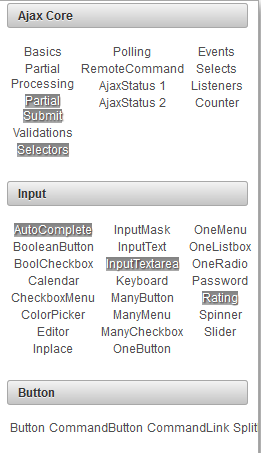 |  |  |
We will use only about fifteen of them in our examples, but that will be enough to understand the principles of building a PrimeFaces page.
5.3. Learning PrimeFaces
PrimeFaces provides usage examples for each of its components. Simply click on the link. Let’s look at an example:
 |
- in [1], the example for the [Spinner] component,
- in [2], the dialog box displayed after clicking the [Submit] button.
There are three new features here for us:
- the [Spinner] component, which does not exist by default in JSF,
- the same goes for the dialog box,
- and finally, the POST triggered by the [Submit] button is handled via AJAX. If you watch the browser closely during the POST, you won’t see the hourglass. The page isn’t reloaded. It’s simply modified: a new component—in this case, the dialog box—appears on the page.
Let’s see how all this works. The XHTML code for the example is as follows:
<h:form>
<p:panel header="Spinners">
<h:panelGrid id="grid" columns="2" cellpadding="5">
<h:outputLabel for="spinnerBasic" value="Basic Spinner: " />
<p:spinner id="spinnerBasic" value="#{spinnerController.number1}"/>
<h:outputLabel for="spinnerStep" value="Step Factor: " />
<p:spinner id="spinnerStep" value="#{spinnerController.number2}" stepFactor="0.25"/>
<h:outputLabel for="minmax" value="Min/Max: " />
<p:spinner id="minmax" value="#{spinnerController.number3}" min="0" max="100"/>
<h:outputLabel for="prefix" value="Prefix: " />
<p:spinner id="prefix" value="0" prefix="$" min="0" value="#{spinnerController.number4}"/>
<h:outputLabel for="ajaxspinner" value="Ajax Spinner: " />
<p:outputPanel>
<p:spinner id="ajaxspinner" value="#{spinnerController.number5}">
<p:ajax update="ajaxspinnervalue" process="@this" />
</p:spinner>
<h:outputText id="ajaxspinnervalue" value="#{spinnerController.number5}"/>
</p:outputPanel>
</h:panelGrid>
</p:panel>
<p:commandButton value="Submit" update="display" oncomplete="dialog.show()" />
<p:dialog header="Values" widgetVar="dialog" showEffect="fold" hideEffect="fold">
...
</p:dialog>
</h:form>
First, note that we see standard JSF tags: <h:form> on line 1, <h:panelGrid> on line 3, <h:outputLabel> on line 4. Some JSF tags are reused by PF and enhanced: <p:commandButton> on line 21. Next, we find PF formatting tags: <p:panel> on line 2, <p:outputPanel> on line 13, <p:dialog> on line 23. Finally, we have input tags: <p:spinner> on line 5.
Let’s analyze this code in relation to the view:
 |
- in [1], the component created with the <p:panel> tag on line 2,
- in [2], the input field created by combining the <p:outputLabel> and <p:spinner> tags on lines 6 and 7,
- in [3], the POST button created using the <p:commandButton> tag on line 21,
- in [4], the dialog box from lines 23–25,
- in [5], an invisible container for two components. It is created by the <p:outputPanel> tag on line 13.
Let’s analyze the following code that implements an AJAX action:
<h:outputLabel for="ajaxspinner" value="Ajax Spinner: " />
<p:outputPanel>
<p:spinner id="ajaxspinner" value="#{spinnerController.number5}">
<p:ajax update="ajaxspinnervalue" process="@this" />
</p:spinner>
<h:outputText id="ajaxspinnervalue" value="#{spinnerController.number5}"/>
</p:outputPanel>
This code generates the following view:
 |
- line 1: displays the text [1]. It also serves as the label for the component with id=ajaxspinner (for attribute). This component is the one in line 3 (id attribute),
- Lines 3–5: display component [2]. This component is an input/display component associated with the model #{spinnerController.number5} (value attribute),
- line 6: displays component [3]. This component is a display component linked to the model #{spinnerController.number5} (value attribute),
- line 4: the <p:ajax> tag adds AJAX behavior to the spinner. Every time the spinner changes its value, a POST request containing that value (process="@this" attribute) is sent to the #{spinnerController.number5} model. Once this is done, the page is updated (update attribute). This attribute’s value is the ID of a component on the page, in this case the one on line 6. The component targeted by the update attribute is then updated with the model. This is again #{spinnerController.number5}, i.e., the spinner’s value. Thus, field [3] follows the entries in field [2].
This is an AJAX behavior, an acronym standing for Asynchronous JavaScript and XML. Generally speaking, an AJAX behavior works as follows:
 |
- the browser displays an HTML page containing JavaScript code (the "J" in AJAX). The elements of the page form a JavaScript object called the DOM (Document Object Model),
- the server hosts the web application that generated this page,
- in [1], an event occurs on the page. For example, the spinner increments. This event is handled by JavaScript,
- in [2], the JavaScript sends a POST request to the web application. It does so asynchronously (the A in AJAX). The user can continue working with the page. It is not frozen, but can be frozen if necessary. The POST updates the page model based on the posted values, here the model #{spinnerController.number5},
- in [3], the web application sends an XML (the X in AJAX) or JSON (JavaScript Object Notation) response back to JavaScript,
- in [4], JavaScript uses this response to update a specific area of the DOM, here the area with id=ajaxspinnervalue.
When using JSF and PrimeFaces, the JavaScript is generated by PrimeFaces. This library relies on the jQuery JavaScript library. Similarly, PrimeFaces components rely on those from the jQuery UI (User Interface) component library. Therefore, jQuery forms the foundation of PrimeFaces.
Let’s return to our example and now look at the POST request from the [Submit] button:
 |
The code associated with the POST is as follows:
<p:commandButton value="Submit" update="display" oncomplete="dialog.show()" />
<p:dialog header="Values" widgetVar="dialog" showEffect="fold" hideEffect="fold">
<h:panelGrid id="display" columns="2" cellpadding="5">
<h:outputText value="Value 1: " />
<h:outputText value="#{spinnerController.number1}" />
<h:outputText value="Value 2: " />
<h:outputText value="#{spinnerController.number2}" />
<h:outputText value="Value 3: " />
<h:outputText value="#{spinnerController.number3}" />
<h:outputText value="Value 4: " />
<h:outputText value="#{spinnerController.number4}" />
<h:outputText value="Value 5: " />
<h:outputText value="#{spinnerController.number5}" />
</h:panelGrid>
</p:dialog>
</h:form>
- Line 1: The POST request is triggered by the button on line 1. In PrimeFaces, tags that trigger a POST request do so by default via an AJAX call. This is why these tags have an `update` attribute to specify the area to be updated once the server response is received. Here, the area being updated is the panelGrid in line 4. So when the POST response returns, this area will be updated with the values posted to the model. However, these values are contained within a dialog box that is hidden by default. It is the oncomplete attribute in line 1 that displays it. This event occurs at the end of the POST processing. The value of this attribute is JavaScript code. Here, we display the dialog box with id=dialog, which is the one from line 3 (widgetVar attribute),
- Line 3: We see various attributes of the dialog box. You’ll need to experiment to see what they do.
We’ve mentioned the model but haven’t shown it yet. Here it is:
Generally speaking, you can proceed as follows:
- identify the PrimeFaces component you want to use,
- study its example. PrimeFaces examples are well-written and easy to understand.
5.4. A first PrimeFaces project: mv-pf-01
Let’s build a Maven web project with NetBeans:
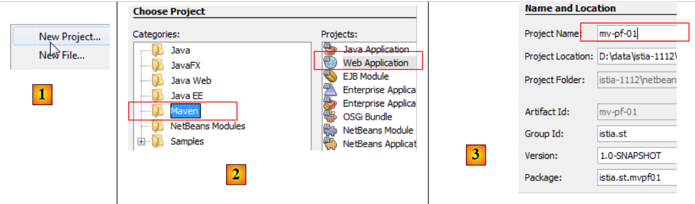 |
- [1, 2, 3]: create a Maven project of type [Web Application],
 |
- [4]: the server will be Tomcat,
- in [5], the generated project,
- in [6], remove the [index.jsp] file and the Java package,
 |
- in [7, 8]: in the project properties, we add support for Java Server Faces,
 |
- in [9], in the [Components] tab, select the PrimeFaces component library. NetBeans offers support for other component libraries: ICEFaces and RichFaces.
- In [10], the generated project. In [11], note the dependency on PrimeFaces.
In short, a PrimeFaces project is a standard JSF project to which a dependency on PrimeFaces has been added. Nothing more.
Now that we understand this, we modify the [pom.xml] file to work with the latest versions of the libraries:
<dependency>
<groupId>com.sun.faces</groupId>
<artifactId>jsf-impl</artifactId>
<version>2.1.8</version>
<scope>compile</scope>
</dependency>
<dependency>
<groupId>org.primefaces</groupId>
<artifactId>primefaces</artifactId>
<version>3.3</version>
<scope>compile</scope>
</dependency>
<dependency>
<groupId>javax</groupId>
<artifactId>javaee-web-api</artifactId>
<version>6.0</version>
<scope>provided</scope>
</dependency>
</dependencies>
<repositories>
<repository>
<id>jsf20</id>
<name>Repository for library Library[jsf20]</name>
<url>http://download.java.net/maven/2/</url>
</repository>
<repository>
<id>primefaces</id>
<name>Repository for library Library[primefaces]</name>
<url>http://repository.primefaces.org/</url>
</repository>
</repositories>
Lines 26–30: Note the Maven repository for PrimeFaces. Once these changes are made, build the project to start downloading the dependencies. You will then obtain the project [12].
Now, let’s try to reproduce the example we studied. The [index.html] page becomes the following:
<?xml version='1.0' encoding='UTF-8' ?>
<!DOCTYPE html PUBLIC "-//W3C//DTD XHTML 1.0 Transitional//EN" "http://www.w3.org/TR/xhtml1/DTD/xhtml1-transitional.dtd">
<html xmlns="http://www.w3.org/1999/xhtml"
xmlns:h="http://java.sun.com/jsf/html"
xmlns:p="http://primefaces.org/ui"
xmlns:f="http://java.sun.com/jsf/core"
xmlns:ui="http://java.sun.com/jsf/facelets">
<h:head>
<title>Spinner</title>
</h:head>
<h:body>
<!-- form -->
<h:form>
<p:panel header="Spinners">
<h:panelGrid id="grid" columns="2" cellpadding="5">
<h:outputLabel for="spinnerBasic" value="Basic Spinner: " />
<p:spinner id="spinnerBasic" value="#{spinnerController.number1}"/>
<h:outputLabel for="spinnerStep" value="Step Factor: " />
<p:spinner id="spinnerStep" value="#{spinnerController.number2}" stepFactor="0.25"/>
<h:outputLabel for="minmax" value="Min/Max: " />
<p:spinner id="minmax" value="#{spinnerController.number3}" min="0" max="100"/>
<h:outputLabel for="prefix" value="Prefix: " />
<p:spinner id="prefix" prefix="$" min="0" value="#{spinnerController.number4}"/>
<h:outputLabel for="ajaxspinner" value="Ajax Spinner: " />
<p:outputPanel>
<p:spinner id="ajaxspinner" value="#{spinnerController.number5}">
<p:ajax update="ajaxspinnervalue" process="@this" />
</p:spinner>
<h:outputText id="ajaxspinnervalue" value="#{spinnerController.number5}"/>
</p:outputPanel>
</h:panelGrid>
</p:panel>
<p:commandButton value="Submit" update="display" oncomplete="dialog.show()" />
<!-- dialog box -->
<p:dialog header="Values" widgetVar="dialog" showEffect="fold" hideEffect="fold">
<h:panelGrid id="display" columns="2" cellpadding="5">
<h:outputText value="Value 1: " />
<h:outputText value="#{spinnerController.number1}" />
<h:outputText value="Value 2: " />
<h:outputText value="#{spinnerController.number2}" />
<h:outputText value="Value 3: " />
<h:outputText value="#{spinnerController.number3}" />
<h:outputText value="Value 4: " />
<h:outputText value="#{spinnerController.number4}" />
<h:outputText value="Value 5: " />
<h:outputText value="#{spinnerController.number5}" />
</h:panelGrid>
</p:dialog>
</h:form>
</h:body>
</html>
Don't forget line 5, which declares the namespace for the PrimeFaces tag library. Add the bean that serves as the template for the page to the project:
 |
The bean is as follows:
package beans;
import javax.faces.bean.RequestScoped;
import javax.faces.bean.ManagedBean;
@ManagedBean
@RequestScoped
public class SpinnerController {
// model
private int number1;
private double number2;
private int number3;
private int number4;
private int number5;
// getters and setters
...
}
The class is a bean (line 6) with request scope (line 7). Since no name was specified, the bean takes the name of the class with the first character lowercase: spinnerController.
When we run the project, we get the following:
 |
We have just demonstrated how to test an example taken from the PrimeFaces website. All examples can be tested in this way.
Moving forward, we will focus only on certain PrimeFaces components. We will first revisit the examples studied with JSF and replace certain JSF tags with PrimeFaces tags. The appearance of the pages will change slightly; they will have AJAX behavior, but the associated beans will not need to be changed. In each of the upcoming examples, we will simply present the pages’ XHTML code and the associated screenshots. Readers are encouraged to test the examples to identify the differences between the JSF pages and the PF pages.
5.5. Example mv-pf-02: Event Handler – Internationalization – Page Navigation
This project is a port of the JSF project [mv-jsf2-02] (section 2.4, page 41):
 |  |
The NetBeans project is as follows:
 |
The [index.html] page is as follows:
<?xml version='1.0' encoding='UTF-8' ?>
<!DOCTYPE html PUBLIC "-//W3C//DTD XHTML 1.0 Transitional//EN" "http://www.w3.org/TR/xhtml1/DTD/xhtml1-transitional.dtd">
<html xmlns="http://www.w3.org/1999/xhtml"
xmlns:h="http://java.sun.com/jsf/html"
xmlns:p="http://primefaces.org/ui"
xmlns:f="http://java.sun.com/jsf/core"
xmlns:ui="http://java.sun.com/jsf/facelets">
<f:view locale="#{changeLocale.locale}">
<h:head>
<title><h:outputText value="#{msg['welcome.titre']}" /></title>
</h:head>
<body>
<h:form id="formulaire">
<h:panelGrid columns="2">
<p:commandLink value="#{msg['welcome.langue1']}" action="#{changeLocale.setFrenchLocale}" ajax="false"/>
<p:commandLink value="#{msg['welcome.langue2']}" action="#{changeLocale.setEnglishLocale}" ajax="false"/>
</h:panelGrid>
<h1><h:outputText value="#{msg['welcome.titre']}" /></h1>
<p:commandLink value="#{msg['welcome.page1']}" action="page1" ajax="false"/>
</h:form>
</body>
</f:view>
</html>
On lines 15, 16, and 19, the <h:commandLink> tags have been replaced with <p:commandLink> tags. This tag has AJAX behavior by default, which can be disabled by setting the ajax="false" attribute. So here, the <p:commandLink> tags behave like <h:commandLink> tags: the page will reload when these links are clicked.
5.6. Example mv-pf-03: Page layout using Facelets
This project demonstrates the creation of XHTML pages using the Facelets templates from example [mv-jsf2-09] (section 2.11):
 |
The NetBeans project is as follows:
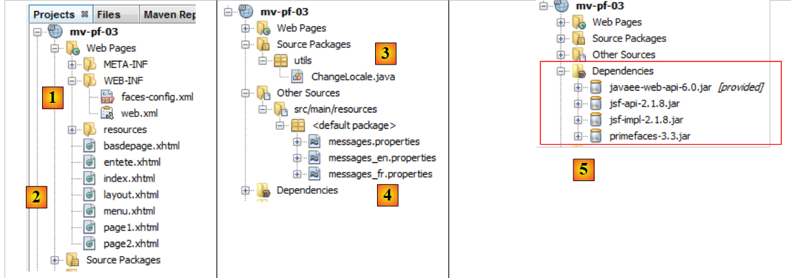 |
- in [1], the JSF project configuration files,
- in [2], the XHTML pages,
- in [3], the support bean for language switching,
- in [4], the message files,
- in [5], the dependencies.
The project pages are based on the [layout.xhtml] page:
<?xml version='1.0' encoding='UTF-8' ?>
<!DOCTYPE html PUBLIC "-//W3C//DTD XHTML 1.0 Transitional//EN" "http://www.w3.org/TR/xhtml1/DTD/xhtml1-transitional.dtd">
<html xmlns="http://www.w3.org/1999/xhtml"
xmlns:h="http://java.sun.com/jsf/html"
xmlns:p="http://primefaces.org/ui"
xmlns:f="http://java.sun.com/jsf/core"
xmlns:ui="http://java.sun.com/jsf/facelets">
<f:view locale="#{changeLocale.locale}">
<h:head>
<title>JSF</title>
<h:outputStylesheet library="css" name="styles.css"/>
</h:head>
<h:body style="background-image: url('${request.contextPath}/resources/images/standard.jpg');">
<h:form id="formulaire">
<table style="width: 600px">
<tr>
<td colspan="2" bgcolor="#ccccff">
<ui:include src="entete.xhtml"/>
</td>
</tr>
<tr>
<td style="width: 100px; height: 200px" bgcolor="#ffcccc">
<ui:include src="menu.xhtml"/>
</td>
<td>
<p:outputPanel id="contenu">
<ui:insert name="contenu" >
<h2>Contenu</h2>
</ui:insert>
</p:outputPanel>
</td>
</tr>
<tr bgcolor="#ffcc66">
<td colspan="2">
<ui:include src="basdepage.xhtml"/>
</td>
</tr>
</table>
</h:form>
</h:body>
</f:view>
</html>
- Line 9: An <f:view> tag wraps the entire page to take advantage of the internationalization it provides,
- line 15: a form with the form ID. This form constitutes the body of the page. Within this body, there is only one dynamic section, lines 28–30. This is where the variable part of the page will be inserted:
 |
- the boxed area above will be updated via AJAX calls. To identify it, we have included it in a PrimeFaces container generated by the <p:outputPanel> tag (line 27). And this container has been named `content` (id attribute). Since it is located within a form, which is itself a container named `form`, the full name of the dynamic area is `form:content`. The first : indicates that we start from the root of the document, then move into the container named "form", and then into the container named "content". One challenge with AJAX is correctly naming the areas to be updated by an AJAX call. The simplest way is to look at the source code of the received HTML page:
Above, we see that the <h:outputPanel> tag has generated an HTML tag <span>. In this example, the relative name form:content (without the leading colon) and the full name :form:content (with the leading colon) refer to the same object.
Note that AJAX calls (<p:commandButton>, <p:commandLink>) that update the dynamic area will have the attribute update=":form:content".
The [index.xhtml] page is the only page displayed by the project:
<?xml version='1.0' encoding='UTF-8' ?>
<!DOCTYPE html PUBLIC "-//W3C//DTD XHTML 1.0 Transitional//EN" "http://www.w3.org/TR/xhtml1/DTD/xhtml1-transitional.dtd">
<html xmlns="http://www.w3.org/1999/xhtml"
xmlns:h="http://java.sun.com/jsf/html"
xmlns:p="http://primefaces.org/ui"
xmlns:f="http://java.sun.com/jsf/core"
xmlns:ui="http://java.sun.com/jsf/facelets">
<ui:composition template="layout.xhtml">
<ui:define name="contenu">
<ui:fragment rendered="#{requestScope.page1 || requestScope.page2==null}">
<ui:include src="page1.xhtml"/>
</ui:fragment>
<ui:fragment rendered="#{requestScope.page2}">
<ui:include src="page2.xhtml"/>
</ui:fragment>
</ui:define>
</ui:composition>
</html>
- Line 8: The template for [index.xhtml] is the [layout.xhtml] page we just discussed.
- line 9, this is the content ID area that is updated by [index.html]. In this area, there are two fragments:
- the [page1.xhtml] fragment on line 11;
- the [page2.xhtml] fragment on line 14.
These two fragments are mutually exclusive.
- Line 10: The [page1.xhtml] fragment is displayed if the request has the page1 attribute set to true or if the page2 attribute does not exist. This is the case for the very first request, where neither of these attributes will be present in the request. In this case, the [page1.xhtml] fragment will be displayed,
- Line 11: The fragment [page2.xhtml] is displayed if the request has the page2 attribute set to true
The fragment [page1.xhtml] is as follows:
<?xml version='1.0' encoding='UTF-8' ?>
<!DOCTYPE html PUBLIC "-//W3C//DTD XHTML 1.0 Transitional//EN" "http://www.w3.org/TR/xhtml1/DTD/xhtml1-transitional.dtd">
<html xmlns="http://www.w3.org/1999/xhtml"
xmlns:h="http://java.sun.com/jsf/html"
xmlns:p="http://primefaces.org/ui"
xmlns:f="http://java.sun.com/jsf/core"
xmlns:ui="http://java.sun.com/jsf/facelets">
<body>
<h:panelGrid columns="2">
<p:commandLink value="#{msg['page1.langue1']}" actionListener="#{changeLocale.setFrenchLocale}" ajax="true" update=":formulaire:contenu"/>
<p:commandLink value="#{msg['page1.langue2']}" actionListener="#{changeLocale.setEnglishLocale}" ajax="true" update=":formulaire:contenu"/>
</h:panelGrid>
<h1><h:outputText value="#{msg['page1.titre']}" /></h1>
<p:commandLink value="#{msg['page1.lien']}" update=":formulaire:contenu">
<f:setPropertyActionListener value="#{true}" target="#{requestScope.page2}" />
</p:commandLink>
</body>
</html>
and displays the following content:
 |
- Lines 11 and 12: the two links to change the language. These two links trigger AJAX calls (ajax=true). This is the default value. Therefore, you do not need to include the ajax=true attribute. We will not do so in the future. Note that these two links update the :form:content area (update attribute), the one highlighted above,
- line 15: an AJAX navigation link that again updates the :form:content area,
- line 16: we use the <h:setPropertyActionListener> tag to set the page2 attribute in the request to true. This will cause the [page2.xhtml] fragment (line 6 below) to be displayed in the [index.xhtml] page:
<ui:composition template="layout.xhtml">
<ui:define name="contenu">
<ui:fragment rendered="#{requestScope.page1 || requestScope.page2==null}">
<ui:include src="page1.xhtml"/>
</ui:fragment>
<ui:fragment rendered="#{requestScope.page2}">
<ui:include src="page2.xhtml"/>
</ui:fragment>
</ui:define>
</ui:composition>
The fragment [page2.xhtml] is similar:
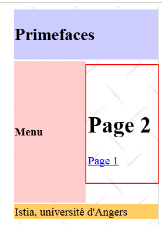 |
The code for [page2.xhtml] is as follows:
<?xml version='1.0' encoding='UTF-8' ?>
<!DOCTYPE html PUBLIC "-//W3C//DTD XHTML 1.0 Transitional//EN" "http://www.w3.org/TR/xhtml1/DTD/xhtml1-transitional.dtd">
<html xmlns="http://www.w3.org/1999/xhtml"
xmlns:h="http://java.sun.com/jsf/html"
xmlns:p="http://primefaces.org/ui"
xmlns:f="http://java.sun.com/jsf/core"
xmlns:ui="http://java.sun.com/jsf/facelets">
<body>
<h1><h:outputText value="#{msg['page2.entete']}"/></h1>
<p:commandLink value="#{msg['page2.lien']}" update=":formulaire:contenu">
<f:setPropertyActionListener value="#{true}" target="#{requestScope.page1}" />
</p:commandLink>
</body>
</html>
From this example, we will keep the following points in mind for later:
- we will use the [layout.xhtml] template as the page template,
- the dynamic area will be identified by the id:form:content and will be updated via AJAX calls.
5.7. Example mv-pf-04: input form
This project is a port of the JSF2 project [mv-jsf2-03] (see section 2.5):
 |
The NetBeans project is as follows:
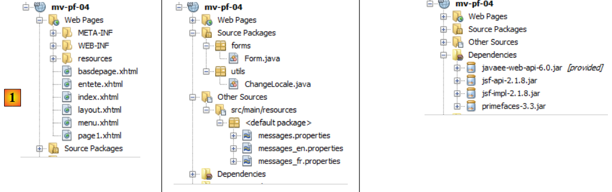 |
Above, in [1], are the project’s XHTML pages. The layout is provided by the [layout.xhtml] template discussed earlier. The [index.xhtml] page is the project’s only page. It is displayed in the :form:content area. Its code is as follows:
<?xml version='1.0' encoding='UTF-8' ?>
<!DOCTYPE html PUBLIC "-//W3C//DTD XHTML 1.0 Transitional//EN" "http://www.w3.org/TR/xhtml1/DTD/xhtml1-transitional.dtd">
<html xmlns="http://www.w3.org/1999/xhtml"
xmlns:h="http://java.sun.com/jsf/html"
xmlns:p="http://primefaces.org/ui"
xmlns:f="http://java.sun.com/jsf/core"
xmlns:ui="http://java.sun.com/jsf/facelets">
<ui:composition template="layout.xhtml">
<ui:define name="contenu">
<ui:include src="page1.xhtml"/>
</ui:define>
</ui:composition>
</html>
It simply displays the fragment [page1.xhtml]. This is equivalent to the form discussed in example [mv-jsf2-03]. Recall that the purpose of that example was to introduce JSF input tags. These tags have been replaced here with PrimeFaces tags.
PanelGrid
To format the elements in [page1.xhtml], we use the <p:panelGrid> tag. For example, for the two language links:
<!-- languages -->
<p:panelGrid columns="2">
<p:commandLink value="#{msg['form.langue1']}" actionListener="#{changeLocale.setFrenchLocale}" update=":formulaire:contenu"/>
<p:commandLink value="#{msg['form.langue2']}" actionListener="#{changeLocale.setEnglishLocale}" update=":formulaire:contenu"/>
</p:panelGrid>
This produces the following output:
Another form of the <p:panelGrid> tag is as follows:
<p:panelGrid>
<f:facet name="header">
<p:row>
<p:column colspan="3"><h:outputText value="#{msg['form.titre']}"/></p:column>
</p:row>
<p:row>
<p:column><h:outputText value="#{msg['form.headerCol1']}"/></p:column>
<p:column><h:outputText value="#{msg['form.headerCol2']}"/></p:column>
<p:column><h:outputText value="#{msg['form.headerCol3']}"/></p:column>
</p:row>
</f:facet>
<p:row>
<p:column>
<h:outputText value="inputText"/>
</p:column>
<p:column>
<h:outputLabel for="inputText" value="#{msg['form.loginPrompt']}" />
<p:inputText id="inputText" value="#{form.inputText}"/>
</p:column>
<p:column>
<h:outputText id="inputTextValue" value="#{form.inputText}"/>
</p:column>
</p:row>
...
<f:facet name="footer">
<p:row>
<p:column colspan="3">
<div align="center">
<p:commandButton value="#{msg['form.submitText']}" update=":formulaire:contenu"/>
</div>
</p:column>
</p:row>
</f:facet>
</p:panelGrid>
The rows and columns of the table are identified by the <p:row> and <p:column> tags.
Lines 3–12 define the table header:
Lines 14–25 define a row of the table:
Lines 27–35 define the table footer:
inputText
<p:row>
<p:column>
<h:outputText value="inputText"/>
</p:column>
<p:column>
<h:outputLabel for="inputText" value="#{msg['form.loginPrompt']}" />
<p:inputText id="inputText" value="#{form.inputText}"/>
</p:column>
<p:column>
<h:outputText id="inputTextValue" value="#{form.inputText}"/>
</p:column>
</p:row>
password
<p:row>
<p:column>
<h:outputText value="inputSecret"/>
</p:column>
<p:column>
<h:outputLabel for="inputSecret" value="#{msg['form.passwdPrompt']}"/>
<p:password id="inputSecret" value="#{form.inputSecret}" feedback="true"
promptLabel="#{msg['form.promptLabel']}" weakLabel="#{msg['form.weakLabel']}"
goodLabel="#{msg['form.goodLabel']}" strongLabel="#{msg['form.strongLabel']}" />
</p:column>
<p:column>
<h:outputText id="inputSecretValue" value="#{form.inputSecret}"/>
</p:column>
</p:row>
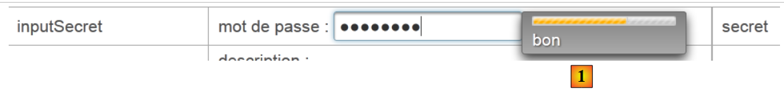 |
Line 7: The feedback=true attribute provides feedback on the strength [1] of the password.
inputTextArea
<p:row>
<p:column>
<h:outputText value="inputTextArea"/>
</p:column>
<p:column>
<h:outputLabel for="inputTextArea" value="#{msg['form.descPrompt']}"/>
<p:editor id="inputTextArea" value="#{form.inputTextArea}" rows="4"/>
</p:column>
<p:column>
<h:outputText id="inputTextAreaValue" value="#{form.inputTextArea}"/>
</p:column>
</p:row>
 |
Line 7: The <p:editor> tag displays a rich text editor that allows you to format the text (font, size, color, alignment, etc.). What is posted to the server is the HTML code of the entered text [2].
selectOneListBox
<p:row>
<p:column>
<h:outputText value="selectOneListBox"/>
</p:column>
<p:column>
<h:outputLabel for="selectOneListBox1" value="#{msg['form.selectOneListBox1Prompt']}"/>
<p:selectOneListbox id="selectOneListBox1" value="#{form.selectOneListBox1}">
<f:selectItem itemValue="1" itemLabel="un"/>
<f:selectItem itemValue="2" itemLabel="deux"/>
<f:selectItem itemValue="3" itemLabel="trois"/>
</p:selectOneListbox>
</p:column>
<p:column>
<h:outputText id="selectOneListBox1Value" value="#{form.selectOneListBox1}"/>
</p:column>
</p:row>
 |
selectOneMenu
<p:row>
<p:column>
<h:outputText value="selectOneMenu"/>
</p:column>
<p:column>
<h:outputLabel for="selectOneMenu" value="#{msg['form.selectOneMenuPrompt']}"/>
<p:selectOneMenu id="selectOneMenu" value="#{form.selectOneMenu}">
<f:selectItem itemValue="1" itemLabel="un"/>
<f:selectItem itemValue="2" itemLabel="deux"/>
<f:selectItem itemValue="3" itemLabel="trois"/>
<f:selectItem itemValue="4" itemLabel="quatre"/>
<f:selectItem itemValue="5" itemLabel="cinq"/>
</p:selectOneMenu>
</p:column>
<p:column>
<h:outputText id="selectOneMenuValue" value="#{form.selectOneMenu}"/>
</p:column>
</p:row>
 |
selectManyMenu
<p:row>
<p:column>
<h:outputText value="selectManyMenu"/>
</p:column>
<p:column>
<h:outputLabel for="selectManyMenu" value="#{msg['form.selectManyMenuPrompt']}"/>
<p:selectManyMenu id="selectManyMenu" value="#{form.selectManyMenu}" >
<f:selectItem itemValue="1" itemLabel="un"/>
<f:selectItem itemValue="2" itemLabel="deux"/>
<f:selectItem itemValue="3" itemLabel="trois"/>
<f:selectItem itemValue="4" itemLabel="quatre"/>
<f:selectItem itemValue="5" itemLabel="cinq"/>
</p:selectManyMenu>
<p:commandLink value="#{msg['form.buttonRazText']}" actionListener="#{form.clearSelectManyMenu()}" update=":formulaire:selectManyMenu" style="margin-left: 10px"/>
</p:column>
<p:column>
<h:outputText id="selectManyMenuValue" value="#{form.selectManyMenuValue}"/>
</p:column>
</p:row>
 |
Line 14: Note that the [Reset] link performs an AJAX update on the :form:selectManyMenu field, which corresponds to the component on line 6. However, it is important to note that during the AJAX POST, all form values are submitted. Therefore, the entire model is updated. With this model, however, only the :form:selectManyMenu field is updated.
selectBooleanCheckbox
<p:row>
<p:column>
<h:outputText value="selectBooleanCheckbox"/>
</p:column>
<p:column>
<h:outputLabel for="selectBooleanCheckbox" value="#{msg['form.selectBooleanCheckboxPrompt']}"/>
<p:selectBooleanCheckbox id="selectBooleanCheckbox" value="#{form.selectBooleanCheckbox}"/>
</p:column>
<p:column>
<h:outputText id="selectBooleanCheckboxValue" value="#{form.selectBooleanCheckbox}"/>
</p:column>
</p:row>
selectManyCheckbox
<p:row>
<p:column>
<h:outputText value="selectManyCheckbox"/>
</p:column>
<p:column>
<h:outputLabel for="selectManyCheckbox" value="#{msg['form.selectManyCheckboxPrompt']}"/>
<p:selectManyCheckbox id="selectManyCheckbox" value="#{form.selectManyCheckbox}">
<f:selectItem itemValue="1" itemLabel="rouge"/>
<f:selectItem itemValue="2" itemLabel="bleu"/>
<f:selectItem itemValue="3" itemLabel="blanc"/>
<f:selectItem itemValue="4" itemLabel="noir"/>
</p:selectManyCheckbox>
</p:column>
<p:column>
<h:outputText id="selectManyCheckboxValue" value="#{form.selectManyCheckboxValue}"/>
</p:column>
</p:row>
selectOneRadio
<p:row>
<p:column>
<h:outputText value="selectOneRadio"/>
</p:column>
<p:column>
<h:outputLabel for="selectOneRadio" value="#{msg['form.selectOneRadioPrompt']}"/>
<p:selectOneRadio id="selectOneRadio" value="#{form.selectOneRadio}" >
<f:selectItem itemValue="1" itemLabel="voiture"/>
<f:selectItem itemValue="2" itemLabel="vélo"/>
<f:selectItem itemValue="3" itemLabel="scooter"/>
<f:selectItem itemValue="4" itemLabel="marche"/>
</p:selectOneRadio>
</p:column>
<p:column>
<h:outputText id="selectOneRadioValue" value="#{form.selectOneRadio}"/>
</p:column>
</p:row>
5.8. Example: mv-pf-05: dynamic lists
This project is a port of the JSF2 project [mv-jsf2-04] (see section 2.6):

This project does not introduce any new PrimeFaces tags compared to the previous project. Therefore, we will not comment on it. It is included in the list of examples available to the reader on the document’s website.
5.9. Example: mv-pf-06: navigation – session – exception handling
This project is a port of the JSF2 project [mv-jsf2-05] (see section 2.7):
 |
Again, this example does not introduce any new PrimeFaces tags. We will only comment on the table of links highlighted above:
<p:panelGrid columns="6">
<p:commandLink value="1" action="form1?faces-redirect=true" ajax="false"/>
<p:commandLink value="2" action="#{form.doAction2}" ajax="false"/>
<p:commandLink value="3" action="form3?faces-redirect=true" ajax="false"/>
<p:commandLink value="4" action="#{form.doAction4}" ajax="false"/>
<p:commandLink value="#{msg['form.pagealeatoireLink']}" action="#{form.doAlea}" ajax="false"/>
<p:commandLink value="#{msg['form.exceptionLink']}" action="#{form.throwException}" ajax="false"/>
</p:panelGrid>
- All links have the attribute ajax=false. Therefore, the page loads normally.
- Note lines 2 and 4 for how to perform a redirect.
5.10. Example: mv-pf-07: validation and conversion of input data
This project is a port of the JSF2 project [mv-jsf2-06] (see section 2.8):

The application introduces two new tags, the <p:messages> tag:
<p:messages globalOnly="true"/>
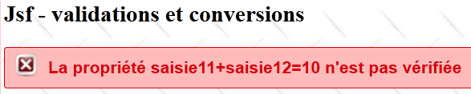
and the <p:message> tag:
<p:inputText id="saisie1" value="#{form.saisie1}" styleClass="saisie"/>
<p:message for="saisie1" styleClass="error"/>
Compared to JSF's <h:message> tag, PF's <p:message> tag introduces the following changes:
- the appearance of the error message is different [1],
- the incorrect input field is surrounded by a red border [2].
5.11. Example: mv-pf-08: events related to component state changes
This project is a port of the JSF2 project [mv-jsf2-07] (see section 2.9):

The JSF project introduced the concept of listeners. Listener management with PrimeFaces was handled differently.
With JSF:
With PrimeFaces:
- Line 2: the <h:selectOneMenu> tag without the valueChangeListener attribute,
- line 4: the <p:ajax> tag adds AJAX behavior to its parent <h:selectOneMenu> tag. By default, it reacts to the "value change" event of the combo1 list. Upon this event, the values of the form to which it belongs will be posted to the server via an AJAX call. The model is therefore updated. We use this new model to update the drop-down list identified as combo2 (line 10). Note, on line 4, that the AJAX call does not execute any model methods. This is unnecessary here. We simply want to update the model by posting the entered values.
5.12. Example: mv-pf-09: Assisted Input
This project features PrimeFaces-specific input tags that facilitate the entry of certain types of data:
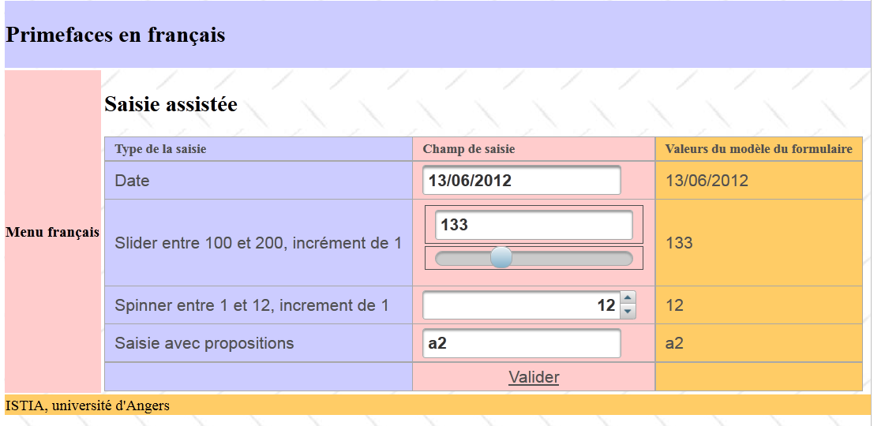 |
5.12.1. The NetBeans project
The NetBeans project is as follows:
 |
The project’s value lies in:
- the single page [index.html] displayed by it,
- the template [Form.java] for that page.
5.12.2. The template
The form has four input fields associated with the following template:
package forms;
import java.io.Serializable;
import java.util.ArrayList;
import java.util.Date;
import java.util.List;
import javax.faces.bean.RequestScoped;
import javax.faces.bean.ManagedBean;
@ManagedBean
@SessionScoped
public class Form implements Serializable {
private Date calendrier;
private Integer slider = 100;
private Integer spinner = 1;
private String autocompleteValue;
public Form() {
}
public List<String> autocomplete(String query) {
...
}
// getters and setters
...
}
The four inputs are associated with the fields in lines 14–17.
5.12.3. The form
The form is as follows:
<?xml version='1.0' encoding='UTF-8' ?>
<html xmlns="http://www.w3.org/1999/xhtml"
xmlns:h="http://java.sun.com/jsf/html"
xmlns:p="http://primefaces.org/ui"
xmlns:f="http://java.sun.com/jsf/core"
xmlns:ui="http://java.sun.com/jsf/facelets">
<ui:composition template="layout.xhtml">
<ui:define name="contenu">
<h2><h:outputText value="#{msg['app.titre']}"/></h2>
<p:growl id="messages" autoUpdate="true"/>
<p:panelGrid columns="3" columnClasses="col1,col2,col3,col4">
<h:outputText value="#{msg['saisie.type']}" styleClass="entete"/>
<h:outputText value="#{msg['saisie.champ']}" styleClass="entete"/>
<h:outputText value="#{msg['bean.valeur']}" styleClass="entete"/>
<!-- calendar -->
...
<!-- slider -->
...
<!-- spinner -->
...
<!-- autocomplete -->
...
</p:panelGrid>
</ui:define>
</ui:composition>
</html>
Let's take a look at the four input fields.
5.12.4. The calendar
The <p:calendar> tag allows you to select a date from a calendar. This tag supports various attributes.
<h:outputText value="#{msg['calendar.prompt']}"/>
<p:calendar id="calendrier" value="#{form.calendrier}" pattern="dd/MM/yyyy" timeZone="Europe/Paris"/>
<h:outputText id="calendrierValue" value="#{form.calendrier}">
<f:convertDateTime pattern="dd/MM/yyyy" type="date" timeZone="Europe/Paris"/>
</h:outputText>
Line 2 specifies that the date should be displayed in the "dd/mm/yyyy" format and that the time zone is Paris. When you place the cursor in the input field, a calendar is displayed:
 |
5.12.5. The slider
The <p:slider> tag allows you to enter an integer by dragging a slider along a bar:
The tag code is as follows:
<h:outputText value="#{msg['slider.prompt']}"/>
<h:panelGrid columns="1" style="margin-bottom:10px">
<p:inputText id="slider" value="#{form.slider}" required="true" requiredMessage="#{msg['slider.required']}" validatorMessage="#{msg['slider.invalide']}">
<f:validateLongRange minimum="100" maximum="200"/>
</p:inputText>
<p:slider for="slider" minValue="100" maxValue="200"/>
</h:panelGrid>
<h:outputText id="sliderValue" value="#{form.slider}"/>
- Line 3: This is a standard <p:inputText> tag that allows you to enter an integer. This value can also be entered using the slider,
- line 4: the <p:slider> tag is associated with the <p:inputText> input tag (for attribute). We set a minimum and maximum value for it.
5.12.6. The spinner
We have already introduced this component:
<h:outputText value="#{msg['spinner.prompt']}"/>
<p:spinner id="spinner" min="1" max="12" value="#{form.spinner}" required="true" requiredMessage="#{msg['spinner.required']}" validatorMessage="#{msg['spinner.invalide']}">
<f:validateLongRange minimum="1" maximum="12"/>
</p:spinner>
<h:outputText id="spinnerValue" value="#{form.spinner}"/>
Line 3: The spinner allows you to enter an integer between 1 and 12. You can enter the number directly into the spinner's input field or use the arrows to increase or decrease the entered number.
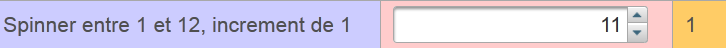 |
5.12.7. Autocomplete
Autocomplete involves typing the first few characters of the input. Suggestions then appear in a dropdown list. You can select one of them. This component is used instead of dropdown lists when the latter contain too much content. Suppose you want to offer a dropdown list of cities in France. That amounts to several thousand cities. If you let the user type the first three characters of the city, you can then offer them a reduced list of cities starting with those characters.
 |
The code for this component is as follows:
<h:outputText value="#{msg['autocomplete.prompt']}"/>
<p:autoComplete value="#{form.autocompleteValue}" completeMethod="#{form.autocomplete}" required="true" requiredMessage="#{msg['autocomplete.required']}"/>
<h:outputText id="autocompleteValue" value="#{form.autocompleteValue}"/>
<h:panelGroup/>
<h:panelGroup>
<center><p:commandLink value="#{msg['valider']}" update="formulaire:contenu"/></center>
</h:panelGroup>
<h:panelGroup/>
The <p:autoComplete> tag on line 2 is what enables autocomplete. The parameter of interest here is the completeMethod attribute, whose value is the name of a method in the model responsible for generating suggestions based on the characters typed by the user. This method is defined as follows:
public List<String> autocomplete(String query) {
List<String> results = new ArrayList<String>();
for (int i = 0; i < 10; i++) {
results.add(query + i);
}
return results;
}
- line 1: the method receives as a parameter the string of characters typed by the user in the input field. It returns a list of suggestions,
- lines 4–6: a list of 10 suggestions is constructed, using the characters received as parameters and adding a digit from 0 to 9 to each.
5.12.8. The <p:growl> tag
The <p:growl> tag is a possible replacement for the <p:messages> tag, which displays form error messages.
<p:growl id="messages" autoUpdate="true"/>
In the example above, the id attribute is not used. The autoUpdate=true attribute indicates that the list of error messages must be refreshed with every form POST.
Suppose we submit the following form [1]:
 |
- In [2], the <p:growl> tag then displays the error messages associated with the incorrect entries.
5.13. Example: mv-pf-10: dataTable - 1
This project introduces the <p:dataTable> tag, which is used to display lists of data

5.13.1. The NetBeans Project
The NetBeans project is as follows:
 |
The appeal of the project lies in:
- the single page [index.html] displayed by the project,
- the [Form.java] template for that page, and the [Person] bean.
5.13.2. The messages file
The [messages_fr.properties] file is as follows:
app.titre=intro-08
app.titre2=DataTable - 1
submit=Valider
personnes.headers.id=Id
personnes.headers.nom=Nom
personnes.headers.prenom=Pr\u00e9nom
layout.hautdepage=Primefaces en fran\u00e7ais
layout.menu=Menu fran\u00e7ais
layout.basdepage=ISTIA, universit\u00e9 d'Angers
form.langue1=Fran\u00e7ais
form.langue2=Anglais
form.noData=La liste des personnes est vide
form.listePersonnes=Liste de personnes
form.action=Action
5.13.3. The model
The [Person] bean represents a person:
package forms;
import java.io.Serializable;
public class Personne implements Serializable{
// data
private int id;
private String nom;
private String prénom;
// manufacturers
public Personne(){
}
public Personne(int id, String nom, String prénom){
this.id=id;
this.nom=nom;
this.prénom=prénom;
}
// toString
public String toString(){
return String.format("Personne[%d,%s,%s]", id,nom,prénom);
}
// getter and setters
...
}
The template for the [index.xhtml] page is the following [Form] class:
package forms;
import java.io.Serializable;
import java.util.ArrayList;
import java.util.List;
import javax.faces.bean.ManagedBean;
import javax.faces.bean.SessionScoped;
@ManagedBean
@SessionScoped
public class Form implements Serializable{
// model
private List<Personne> personnes;
private int personneId;
// manufacturer
public Form() {
// initialization of the list of persons
personnes = new ArrayList<Personne>();
personnes.add(new Personne(1, "dupont", "jacques"));
personnes.add(new Personne(2, "durand", "élise"));
personnes.add(new Personne(3, "martin", "jacqueline"));
}
public void retirerPersonne() {
...
}
// getters and setters
...
}
- lines 9-10: the bean has session scope,
- lines 18–24: the constructor creates a list of three people, a list that will persist across requests,
- line 15: the ID of a person to be removed from the list,
- lines 26–28: the delete method.
5.13.4. The form
The form is as follows [index.xhtml]:
<?xml version='1.0' encoding='UTF-8' ?>
<!DOCTYPE html PUBLIC "-//W3C//DTD XHTML 1.0 Transitional//EN" "http://www.w3.org/TR/xhtml1/DTD/xhtml1-transitional.dtd">
<html xmlns="http://www.w3.org/1999/xhtml"
xmlns:h="http://java.sun.com/jsf/html"
xmlns:p="http://primefaces.org/ui"
xmlns:f="http://java.sun.com/jsf/core"
xmlns:ui="http://java.sun.com/jsf/facelets">
<ui:composition template="layout.xhtml">
<ui:define name="contenu">
<h2><h:outputText value="#{msg['app.titre2']}"/></h2>
<p:dataTable value="#{form.personnes}" var="personne" emptyMessage="#{msg['form.noData']}">
<f:facet name="header">
#{msg['form.listePersonnes']}
</f:facet>
<p:column>
<f:facet name="header">
#{msg['personnes.headers.id']}
</f:facet>
#{personne.id}
</p:column>
<p:column>
<f:facet name="header">
#{msg['personnes.headers.nom']}
</f:facet>
#{personne.nom}
</p:column>
<p:column>
<f:facet name="header">
#{msg['personnes.headers.prenom']}
</f:facet>
#{personne.prénom}
</p:column>
<p:column>
<f:facet name="header">
#{msg['form.action']}
</f:facet>
<p:commandLink value="Retirer" action="#{form.retirerPersonne}" update=":formulaire:contenu">
<f:setPropertyActionListener target="#{form.personneId}" value="#{personne.id}"/>
</p:commandLink>
</p:column>
</p:dataTable>
</ui:define>
</ui:composition>
</html>
This produces the following view (boxed below):
 |
- line 12: generates the table shown in the box above. The value attribute specifies the collection displayed by the table, in this case the list of people from the model. The emptyMessage attribute is optional. It specifies the message to display when the list is empty. By default, it is 'no records found'. Here, it will be:
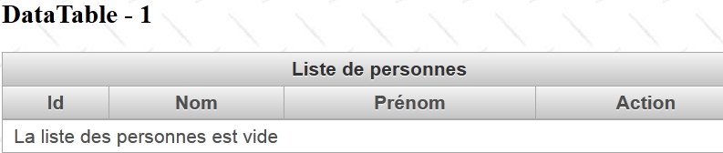 |
- lines 13–15: generate header [1],
- lines 16–21: generate column [2],
- lines 22–27: generate column [3],
- lines 28–33: generate column [4],
- lines 34-41: generate column [5].
The [Remove] link allows you to remove a person from the list. In line [38], the [Form].removePerson method performs this task. It needs to know the ID of the person to be removed. This is provided in line 39. In line 38, we used the action attribute. On other occasions, we have used the actionListener attribute. I’m not sure I fully understand the functional difference between these two attributes. In practice, however, we notice that the attributes set by the <setPropertyActionListener> tags are set before the method designated by the action attribute is executed, whereas this is not the case for the actionListener attribute. In short, as soon as there are parameters to send to the called action, you must use the action attribute.
The method for removing a person is as follows:
...
@ManagedBean
@SessionScoped
public class Form implements Serializable{
// model
private List<Personne> personnes;
private int personneId;
public void retirerPersonne() {
// search for the selected person
int i = 0;
for (Personne personne : personnes) {
// current person = selected person?
if (personne.getId() == personneId) {
// delete the current person from the list
personnes.remove(i);
// we're done
break;
} else {
// next person
i++;
}
}
}
...
}
5.14. Example: mv-pf-11: dataTable - 2
This project features a table displaying a list of data where a row can be selected:
 |
Selecting a row in the table sends information about the selected row to the model during the POST request. As a result, there is no longer a need for a [Remove] link for each person. A single link for the entire table is sufficient.
The NetBeans project is identical to the previous one with a few minor differences: the form and its model. The [index.xhtml] form is as follows:
<?xml version='1.0' encoding='UTF-8' ?>
<!DOCTYPE html PUBLIC "-//W3C//DTD XHTML 1.0 Transitional//EN" "http://www.w3.org/TR/xhtml1/DTD/xhtml1-transitional.dtd">
<html xmlns="http://www.w3.org/1999/xhtml"
xmlns:h="http://java.sun.com/jsf/html"
xmlns:p="http://primefaces.org/ui"
xmlns:f="http://java.sun.com/jsf/core"
xmlns:ui="http://java.sun.com/jsf/facelets">
<ui:composition template="layout.xhtml">
<ui:define name="contenu">
<h2><h:outputText value="#{msg['app.titre2']}"/></h2>
<p:dataTable value="#{form.personnes}" var="personne" emptyMessage="#{msg['form.noData']}"
rowKey="#{personne.id}" selection="#{form.personneChoisie}" selectionMode="single">
...
</p:dataTable>
<p:commandLink value="Retirer" action="#{form.retirerPersonne}" update=":formulaire:contenu"/>
</ui:define>
</ui:composition>
</html>
- line 13: the selectionMode attribute allows you to choose between single or multiple selection modes. Here, we have chosen to select only a single row,
- line 13: the rowkey attribute designates an attribute of the displayed elements that allows them to be uniquely selected. Here, we have chosen the ID of the selected person,
- line 13: the selection attribute designates the model attribute that will receive a reference to the selected person. Thanks to the preceding rowkey attribute, a reference to the selected person can be calculated on the server side. We do not have the details of the method used. We can imagine that the collection is traversed sequentially in search of the element corresponding to the selected rowkey. This means that if the method that associates rowkey with selection is more complex, then this method is not usable,
That said, the [Form].removePerson method evolves as follows:
...
@ManagedBean
@SessionScoped
public class Form implements Serializable {
// model
private List<Personne> personnes;
private Personne personneChoisie;
// manufacturer
public Form() {
...
}
public void retirerPersonne() {
// we remove the chosen person
personnes.remove(personneChoisie);
}
// getters and setters
...
}
- line 9: on each POST, the reference in line 9 is initialized with the reference, in the list from line 8, of the selected person,
- in 18: this simplifies the process of removing the row. The search we performed in the previous example was done using the <dataTable> tag.
5.15. Example: mv-pf-12: dataTable - 3
This project is similar to the previous one. The view is notably identical:

The NetBeans project is identical to the previous one, with a few minor differences that we will review. The [index.xhtml] form changes as follows:
...
<ui:composition template="layout.xhtml">
<ui:define name="contenu">
<h2><h:outputText value="#{msg['app.titre2']}"/></h2>
<p:dataTable value="#{form.personnes}" var="personne" emptyMessage="#{msg['form.noData']}"
selectionMode="single" selection="#{form.personneChoisie}">
...
</p:dataTable>
<p:commandLink value="Retirer" action="#{form.retirerPersonne}" update=":formulaire:contenu"/>
</ui:define>
</ui:composition>
</html>
- Line 6: the rowkey attribute has been removed, but the selection attribute remains. The link between the rowkey and selection attributes is now established through a class. The value attribute on line 5 now holds an instance of the PrimeFaces SelectableDataModel<T> interface. The [Form].getPeople method of the model is updated as follows:
public DataTableModel getPersonnes() {
return new DataTableModel(personnes);
}
A new bean is thus added to the project:
 |
This bean is as follows:
package forms;
import java.util.List;
import javax.faces.model.ListDataModel;
import org.primefaces.model.SelectableDataModel;
public class DataTableModel extends ListDataModel<Personne> implements SelectableDataModel<Personne> {
// manufacturers
public DataTableModel() {
}
public DataTableModel(List<Personne> personnes) {
super(personnes);
}
@Override
public Object getRowKey(Personne personne) {
return personne.getId();
}
@Override
public Personne getRowData(String rowKey) {
// list of persons
List<Personne> personnes = (List<Personne>) getWrappedData();
// the key is an integer
int key = Integer.parseInt(rowKey);
// search for the selected person
for (Personne personne : personnes) {
if (personne.getId() == key) {
return personne;
}
}
// we found nothing
return null;
}
}
- line 7: the class is an instance of the SelectableDataModel interface. At least two classes implement this interface: ListDataModel, whose constructor accepts a list as a parameter, and ArrayDataModel, whose constructor accepts an array as a parameter. Here, our bean extends the ListDataModel class,
- lines 13–15: the constructor takes the list of people we manage as a parameter. This parameter is passed to the parent class,
- line 18: the getRowKey method serves the role of the rowkey attribute that has been removed. It must return the object that uniquely identifies a person, in this case the person’s ID,
- line 23: the getRowData method must return the selected object based on its rowkey. So here, it returns a person based on their ID. The reference obtained in this way will be assigned to the target object of the selection attribute in the dataTable tag, here the attribute selection="#{form.personneChoisie}". The method’s parameter is the rowkey of the object selected by the user, in the form of a string,
- lines 24–35: return the reference to the person whose ID was received. This reference will be assigned to the [Form].personneChoisie model. The [retirerPersonne] method therefore remains unchanged:
public void retirerPersonne() {
// on enlève la personne choisie
personnes.remove(personneChoisie);
}
This is the technique to use when the relationship between the **rowkey and **selection attributes is not a simple property-to-object relationship (**rowkey** to **selection**).
5.16. Example: mv-pf-13: dataTable - 4
This project is similar to the previous one, except that the method for selecting the person to be removed changes:

Above, we see that the object is selected via a context menu (right-click). A confirmation of the deletion is requested:
 |
The [index.xhtml] form changes as follows:
...
<ui:composition template="layout.xhtml">
<ui:define name="contenu">
<!-- title -->
<h2><h:outputText value="#{msg['app.titre2']}"/></h2>
<!-- contextual menu -->
<p:contextMenu for="personnes">
<p:menuitem value="#{msg['form.supprimer']}" onclick="confirmation.show()"/>
</p:contextMenu>
<!-- dialog box -->
<p:confirmDialog widgetVar="confirmation" message="#{msg['form.suppression.confirmation']}"
header="#{msg['form.suppression.message']}" severity="alert" >
<p:commandButton value="#{msg['form.supprimer.oui']}" update=":formulaire:contenu" action="#{form.retirerPersonne}" oncomplete="confirmation.hide()"/>
<p:commandButton value="#{msg['form.supprimer.non']}" onclick="confirmation.hide()" type="button" />
</p:confirmDialog>
<!-- dataTable-->
<p:dataTable id="personnes" value="#{form.personnes}" var="personne" emptyMessage="#{msg['form.noData']}"
selection="#{form.personneChoisie}" selectionMode="single">
...
</p:dataTable>
</ui:define>
</ui:composition>
</html>
- lines 9–11: define a context menu for (for attribute) the dataTable in line 21 (id attribute). This context menu appears when you right-click on the people table,
- line 10: our menu has only one option (menuItem tag). When this option is clicked, the JavaScript code in the onclick attribute is executed. The JavaScript code [confirmation.show()] displays the dialog box from line 14 (widgetVar attribute). It is as follows:
 |
- line 14: the message attribute displays [3], the header attribute displays [1], the severity attribute displays the icon [2],
- line 16: displays [4]. Upon clicking, the person is deleted (action attribute), then the dialog box is closed (oncomplete attribute). The oncomplete attribute is JavaScript code that is executed once the server-side action has been executed,
- line 17: displays [5]. When clicked, the dialog box closes and the person is not deleted.
5.17. Example: mv-pf-14: dataTable - 5
This project demonstrates that it is possible to receive a response from the server after executing an AJAX call. To do this, we use the oncomplete attribute of the AJAX call:
 |
The [index.xhtml] form changes as follows:
...
<ui:composition template="layout.xhtml">
<ui:define name="contenu">
...
<!-- dialog box 1 -->
<p:confirmDialog widgetVar="confirmation" ... >
<p:commandButton value="#{msg['form.supprimer.oui']}" update=":formulaire:contenu" action="#{form.retirerPersonne}" oncomplete="handleRequest(xhr, status, args);confirmation.hide()"/>
<p:commandButton ... />
</p:confirmDialog>
<!-- Javascript -->
<script type="text/javascript">
function handleRequest(xhr, status, args) {
// erreur ?
if(args.msgErreur) {
alert(args.msgErreur);
}
}
</script>
...
</p:dataTable>
</ui:define>
</ui:composition>
</html>
- line 7: the oncomplete attribute calls the JavaScript function in lines 13–18,
- line 13: the method signature must be this one. args is a dictionary that the server-side model can populate,
- line 15: we check if the args dictionary has an attribute named 'msgError'. If so, it is displayed (line 16).
In the model, the [removePerson] method evolves as follows:
public void retirerPersonne() {
// suppression aléatoire
int i = (int) (Math.random() * 2);
if (i == 0) {
// on enlève la personne choisie
personnes.remove(personneChoisie);
} else {
// on renvoie une erreur
String msgErreur = Messages.getMessage(null, "form.msgErreur", null).getSummary();
RequestContext.getCurrentInstance().addCallbackParam("msgErreur", msgErreur);
}
}
- line 3: generate a random number 0 or 1,
- lines 4–6: if it is 0, the person selected by the user is removed from the list of people,
- line 9: otherwise, an internationalized error message is constructed:
form.msgErreur=La personne n'a pu \u00eatre supprim\u00e9e. Veuillez r\u00e9essayer ult\u00e9rieurement.
form.msgErreur_detail=La personne n'a pu \u00eatre supprim\u00e9e. Veuillez r\u00e9essayer ult\u00e9rieurement.
- line 10: a complex statement that adds the attribute named 'msgError' to the args dictionary we mentioned earlier, with the value of msgError constructed on line 9. This attribute is then retrieved by the JavaScript method in [index.xhtml]:
<!-- Javascript -->
<script type="text/javascript">
function handleRequest(xhr, status, args) {
// erreur ?
if(args.msgErreur) {
alert(args.msgErreur);
}
}
</script>
5.18. Example: mv-pf-15: the toolbar
In this project, we are building a toolbar:
 |
The toolbar is the component shown in the box above. It is created using the following XHTML code [index.xhtml]:
<?xml version='1.0' encoding='UTF-8' ?>
<!DOCTYPE html PUBLIC "-//W3C//DTD XHTML 1.0 Transitional//EN" "http://www.w3.org/TR/xhtml1/DTD/xhtml1-transitional.dtd">
<html xmlns="http://www.w3.org/1999/xhtml"
xmlns:h="http://java.sun.com/jsf/html"
xmlns:p="http://primefaces.org/ui"
xmlns:f="http://java.sun.com/jsf/core"
xmlns:ui="http://java.sun.com/jsf/facelets">
<ui:composition template="layout.xhtml">
<ui:define name="contenu">
<!-- title -->
<h2><h:outputText value="#{msg['app.titre2']}"/></h2>
<!-- toolbar-->
<p:toolbar>
<p:toolbarGroup align="left">
...
</p:toolbarGroup>
<p:toolbarGroup align="right">
...
</p:toolbarGroup>
</p:toolbar>
</ui:define>
</ui:composition>
</html>
- lines 15–22: the toolbar,
- lines 16–18: define the group of components to the left of the toolbar,
- lines 19-21: same for the components on the right.
The components to the left of the toolbar are as follows:
<p:toolbarGroup align="left">
<h:outputText value="#{msg['form.etudiant']}"/>
<p:spacer width="50px"/>
<p:selectOneMenu value="#{form.personneId}" effect="fade">
<f:selectItems value="#{form.personnes}" var="personne" itemLabel="#{personne.prénom} #{personne.nom}" itemValue="#{personne.id}"/>
</p:selectOneMenu>
<p:separator/>
<p:commandButton id="delete-personne" icon="ui-icon-trash" action="#{form.supprimerPersonne}" update=":formulaire:contenu"/>
<p:tooltip for="delete-personne" value="#{msg['form.delete.personne']}"/>
</p:toolbarGroup>
They display the view below:
 |
- line 2: displays [1],
- line 3: displays a 30-pixel space [2],
- lines 4–6: display a dropdown list with a list of people [3],
- line 7: displays a separator [4],
- line 8: displays a button [5] used to delete the person selected from the drop-down list. The button has an icon. These icons are from jQuery UI. You can find a list of them at the URL [http://jqueryui.com/themeroller/] [6]:
 |
- to find the name of an icon, simply hover the mouse over it. This name is then used in the icon attribute of the <commandButton> component, for example icon="ui-icon-trash". Note that above, the name given is .ui-icon-trash and that the leading dot is removed from this name in the icon attribute,
- Line 9: creates a tooltip for the button (for attribute). When you hover over the button, the tooltip message appears [7].
The template associated with these components is as follows:
package forms;
import java.io.Serializable;
import java.util.ArrayList;
import java.util.List;
import javax.faces.bean.ManagedBean;
import javax.faces.bean.SessionScoped;
@ManagedBean
@SessionScoped
public class Form implements Serializable {
// model
private List<Personne> personnes;
private int personneId;
// manufacturer
public Form() {
// initialization of the list of persons
personnes = new ArrayList<Personne>();
personnes.add(new Personne(1, "dupont", "jacques"));
personnes.add(new Personne(2, "durand", "élise"));
personnes.add(new Personne(3, "martin", "jacqueline"));
}
public void supprimerPersonne() {
// search for the selected person
int i = 0;
for (Personne personne : personnes) {
// current person = selected person?
if (personne.getId() == personneId) {
// delete the current person from the list
personnes.remove(i);
// we're done
break;
} else {
// next person
i++;
}
}
}
// getters and setters
...
}
The components on the right side of the toolbar are as follows:
<p:toolbar>
<p:toolbarGroup align="left">
...
</p:toolbarGroup>
<p:toolbarGroup align="right">
<p:menuButton value="#{msg['form.options']}">
<p:menuitem id="menuitem-francais" value="#{msg['form.francais']}" actionListener="#{changeLocale.setFrenchLocale}" update=":formulaire"/>
<p:menuitem id="menuitem-anglais" value="#{msg['form.anglais']}" actionListener="#{changeLocale.setEnglishLocale}" update=":formulaire"/>
</p:menuButton>
</p:toolbarGroup>
</p:toolbar>
They display the view below:
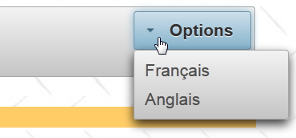 |
- lines 6–9: a menu button. It contains menu options,
- line 7: the option to switch the form to French,
- line 8: the option to switch it to English.
5.19. Conclusion
We now know enough to port our sample application to PrimeFaces. We have only covered about fifteen components, whereas the library contains over 100. Readers are encouraged to search for any missing components directly on the PrimeFaces website.
5.20. Testing with Eclipse
The Maven projects are available on the examples website [1]:
 |
Once imported into Eclipse, they can be run [2]. Select Tomcat in [3]. They will then be displayed in Eclipse’s internal browser [3].
 |